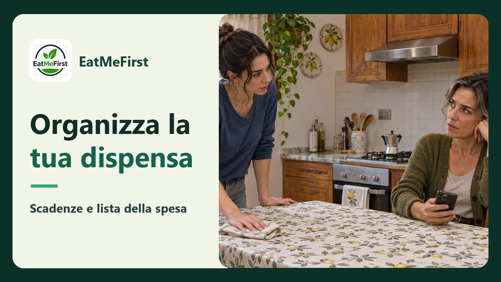

Vuoi conoscerla meglio?
Sei sul sito di presentazione di EatMeFirst: qui scopri cosa puoi fare, con esempi e guide spiegate passo passo.
Scopri come funzionaEATMEFIRST · MENO SPRECHI, PIÙ ORDINE IN CASA
Aprire il frigorifero e scoprire che qualcosa è andato a male… Ti è capitato? Magari era lì da giorni, nascosto dietro a un’altra confezione.
Con EatMeFirst tieni in ordine le scadenze, ricordi cosa hai in casa e ritrovi nella lista della spesa i prodotti esauriti.
BENVENUTO, SEI NEL POSTO GIUSTO!
Questa è la pagina dove ti presentiamo EatMeFirst. Scopri come funziona oppure fai pratica con una dispensa inventata. Quando vuoi cominciare, trovi il pulsante per usare l’app in fondo alla pagina.
Sei sul sito di presentazione di EatMeFirst: qui scopri cosa puoi fare, con esempi e guide spiegate passo passo.
Scopri come funzionaProva i comandi con Max, Eva e Leo e prodotti di esempio. Puoi sbagliare senza toccare la tua dispensa!
Impara giocandoDIMMI SE TI RICONOSCI
Non solo gli alimenti: anche detersivi, prodotti per gli animali e le altre cose che compri per la casa. Noi abbiamo pensato a questi desideri. Sono anche i tuoi?
«Non vorrei dover dare email, accessi Google o recapiti vari. Né inventare un’altra password.»
Qui non serve registrarsi: puoi iniziare a usare la dispensa senza creare un account.
«Vorrei che prodotti, quantità e abitudini di consumo restassero sul mio cellulare.»
Prodotti, quantità e annotazioni restano sul tuo cellulare: l’elenco della tua dispensa non viene inviato a noi. Quando cerchi un prodotto con il codice a barre, l’app manda quel codice agli archivi esterni per trovare le informazioni, non il contenuto della tua dispensa.
«Vorrei capire cosa fare, anche senza essere un esperto.»
I punti info ti accompagnano nelle varie funzioni. E ci sono Max, Eva e Leo a darti una mano, con parole semplici e qualche battuta.
«E la verdura del mercato? Quello che compro sfuso? O quello che preparo io?»
Certo: anche senza etichetta puoi inserirli nell’inventario, scrivendo il nome e indicando quantità, dove li conservi ed eventualmente una data. Vale anche per le marmellate fatte in casa, i piatti avanzati e le porzioni che metti nel congelatore.
«Dispensa, frigorifero, garage… vorrei ritrovare tutto senza andare a memoria.»
Scegli le ubicazioni e le categorie che ti servono. Puoi spostare anche solo alcuni pezzi di una confezione e vedere dove si trovano.
«Se consumo mezzo salame o mezza bottiglia, il resto c’è ancora!»
Puoi scaricare pezzi interi oppure indicare quanto contenuto rimane. Non devi far sparire dall’inventario un prodotto solo perché l’hai aperto.
«Vorrei accorgermi dei prodotti in scadenza prima di ritrovarli dimenticati in fondo al frigo.»
L’inventario mette in ordine le scadenze e gli avvisi richiamano la tua attenzione. Puoi distinguere le date tassative da quelle indicative.
«Vorrei ritrovare quello che è finito e aggiungere le cose che mi vengono in mente.»
I prodotti esauriti finiscono nella lista. Puoi aggiungere appunti e, mentre fai la spesa, spuntare le voci: si scuriscono, vengono barrate e vanno in fondo.
AH, DIMENTICAVO…
Sì! Tutto quello che ti abbiamo raccontato puoi usarlo gratuitamente. Non è una prova di 30 giorni!
«E la fregatura dove sta?» Ehehe… al momento non ti mettiamo nemmeno la pubblicità. Se un giorno arriverà, vogliamo che sia discreta, senza disturbarti mentre usi l’app.
Le modifiche alla tua dispensa vengono salvate automaticamente e gratuitamente sul cellulare che utilizzi.
Vogliamo vedere nel dettaglio come funziona?
Una dispensa inventata, i comandi dell’app e qualche sorpresa con Max, Eva e Leo. Puoi sbagliare senza combinare guai!

La presentazione su YouTube · ~5 min
Guide passo passo con Max, Eva e Leo, consigli per usare meglio l’app e anticipazioni sulle funzioni allo studio. L’iscrizione al canale è gratuita.
La tua dispensa, le tue scadenze e la tua lista della spesa, sul cellulare. Senza installare programmi né registrarti.